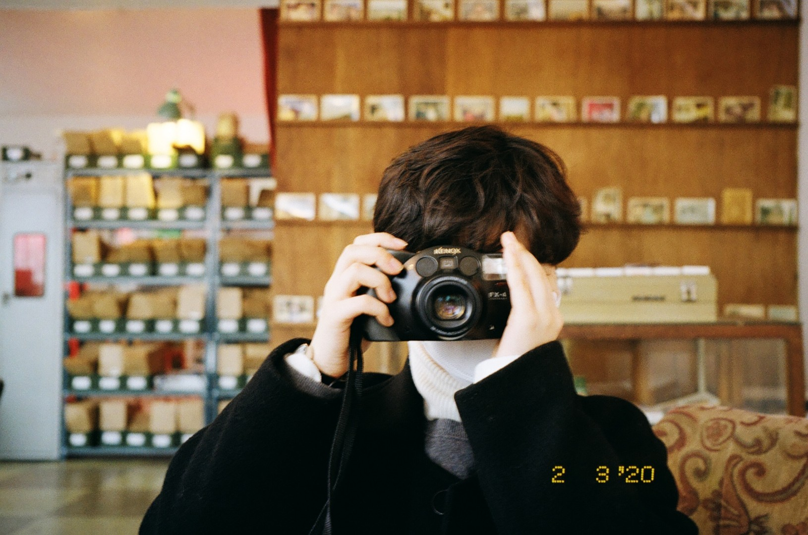
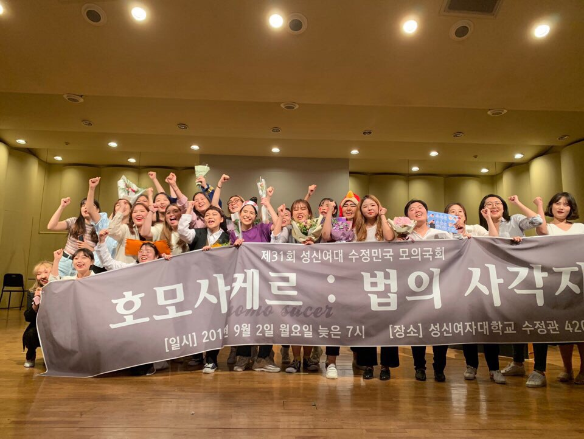

Welcome To My Life
Hello there!
안녕하세요! 저는 성신여자대학교 정치외교학과19학번 김지현이라고 합니다.
그리고 현재 융합보안공학과를 복수전공으로 다양한 학문을 넘나들고있답니다.
사회과학학문과 공대학문을 융합적으로 배우면서 많은 지식을 얻고 성장하고 있는 제 모습이 뿌듯하기도 하지만,
정말 생각보다 무모한 도전이 아니였나하는 후회가 들곤합니다 ^^....그래도 제가 벌린일이니 어쩌겠어요
언젠가 피가되고 살이 될 무기라고 생각하며 열심히 임할것입니다...
현재 코로나19바이러스때문에 보고싶은 학우분들을 못보는게 속상하지만
하루빨리 등교를 하게되어 실습수업도 받고 새로운 학우분들과 친해지고 더 많은 대학 경험을 얻어가리라 고대합니다
다들 무소식이 희소식인 만큼 ! 건강 잘 챙기면서 하루하루 열심히 살아보자구요!~
My Hobby

저의 취미는 필름사진을 찍고 수집하는 것입니다.
친구랑 스티커사진을 찍거나 디지털카메라에 찍은 사진을 인화해서 기록하거나 좋아하는 사람들에게 나눠줄만큼
사진에 대한 애착과 관심이 있답니다.
대학생이 되고나서 집에서 아빠가 사용했던 필름카메라를 발견했는데 아직도 카메라가 잘 작동하더라고요
그래서 대학동기들을 찍거나 풍경사진을 찍곤했습니다
그렇게 차곡차곡 모은 필름들을 현상할때 예전 생각도 새록새록 떠오르고 아날로그만의 감성이 눈앞을 아른거리게 하더라고요 :)
디지털카메라와 달리 별다른 보정작업을 거치지않더라도 그 순간만의 색감과 시간을 거스르는 묘한 기분이 들어
항상 어딜 놀러가거나 손이 심심할때 필름카메라를 챙깁니다.
카메라와 더 친해져서 언젠가는 저만의 인물사진, 풍경사진을 브랜드화할수있는 기술력과 안목을 키워서
취미직업으로 발전시키고싶습니다.
My Work

대학에 입학하면서 겪어본 여러가지 활동중에서 제 2019년의 전부라고도 자부할수있는 활동을 소개하고자합니다.
바로 정치외교학과 학회인 모의국회준비위원회 일명 줄여서 '모준위' 입니다 !
모준위는 사회/정치 이슈를 스터디와 토론으로 지식과 철학을 배운다음 논의했던 토론내용들을 바탕으로
연극대본으로 각색하여 우리 수정민국만의 이야기로 연극을 꾸미는 학회입니다.
자신이 대통령이 될수도있고 국회의원이 될수도 있고 본인이 겪지못했던 다양한 상황에 투입하여
더 넓은 세상을 바라보고 다양한 이야기를 들을 수 있는 힘을 기르게 만들어준 값진 학회입니다.
작년에는 신입생으로 무대를 꾸렸다면 올해는 새로운 신입생들과 함께 무대를 준비하는 스텝역할을 할듯합니다.
모준위친구들 언니들모두모두 보고싶고 앞으로 새로운 모준위를 이끌 동생들도 보고싶습니다.
남는건 모준위 ~~!